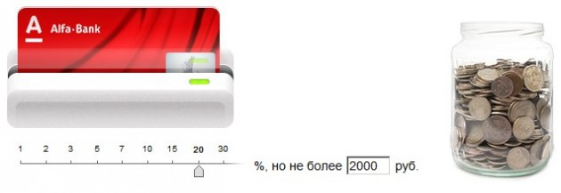

Не у всех конечно, а только у меня.
Подключил в альфа-банке услугу «Копилка для сдачи». Теперь каждый раз, когда рассчитываюсь в магазине с помощью пластиковой карты 20% от стоимости покупки будет автоматически перечисляться на другой (накопительный) счет.

Зачем это надо пока не знаю. Как узнаю — расскажу.